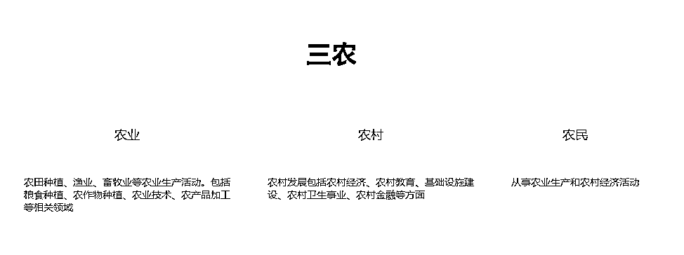
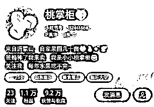
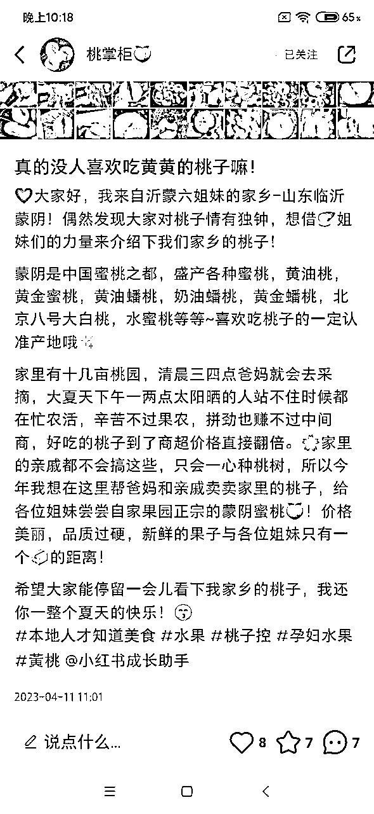
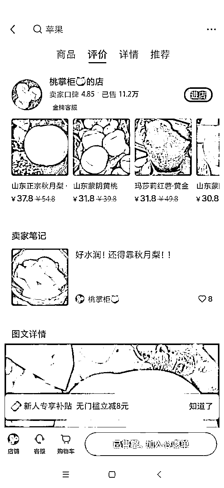
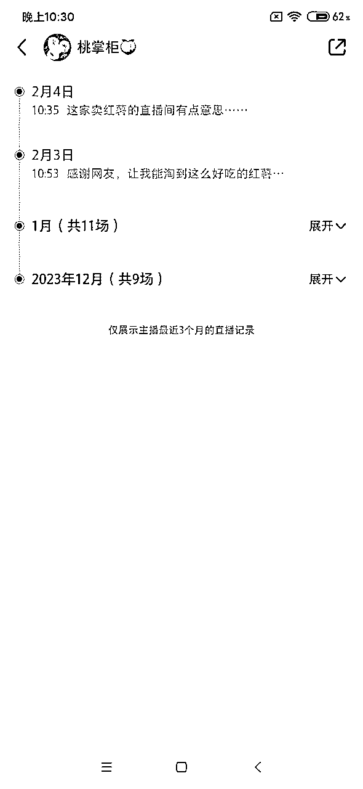
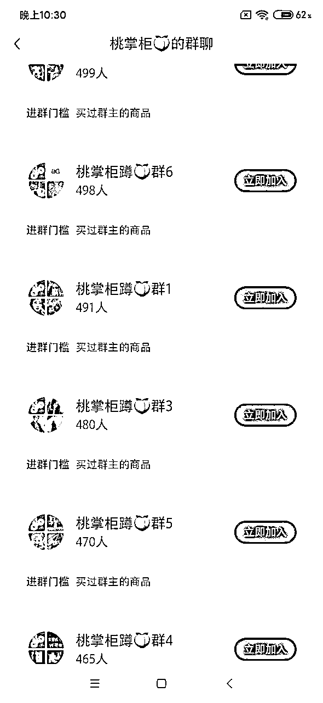
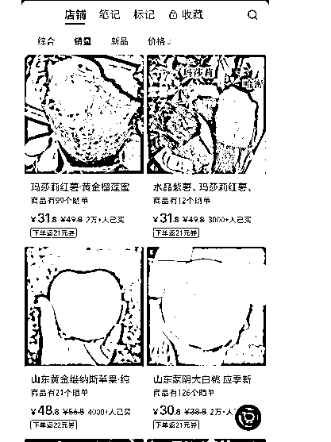
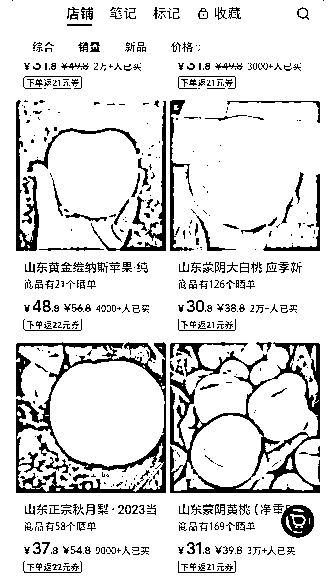

来源：https://ywoum9swmhp.feishu.cn/docx/Eya6ddN3zocVvExC4u2cVb0Enqg
平台：小红书，抖音，快手等，玩法可跨平台
产品：苹果，三农产品，特产，水果等
怎么做？从账号搭建，内容形式，流量渠道，变现方式等进行拆解
前景概述：
对于三农账号的理解

个人理解，就是农产品，地区的一些特产水果，福建有蜜柚，荔枝，龙眼，茶叶等，就是农村盛产的产品。
账号信息：

第一条信息是2023年4月11日发的，那时候看评论区产品还没开店，没有产品链接，截止现在，店铺销量已经11.4W【看图】
账号第一条笔记时间：2023年4月11日
店铺销量：11.4W
店铺商品：秋月梨，蜜桃，番薯，苹果，只有6个品
内容形式：笔记，视频，直播带货，看近三个月历史记录，大约1个月直播9-11场，产品也不一样。 发现在4-8月销售蜜桃，8-10月发秋月梨和番薯，后面有苹果，可能和产品季节性有关系，这样全年有应季产品可以销售。
怼量笔记，观察平均一天发布2-6条笔记/视频，大约十个笔记会有个爆款，就是点赞几百的，甚至有上千的。 封面内容都差不多，根据爆款进行复制
6个群都接近满人，入群门槛是买过群主的商品的，2K+忠实客户，后面季节到了，群里一发，回购率也是很高的。






选择商品，进行账号包装，讲故事，自己家的东西，自己种植的，这样比较提高信任感
如何选择商品：
1、选择原产地优势，整合现有资源，最好是就近有这种原产地优势的
2、网上选择本省的特色产品进行一件代发，选择之前要自己调研好产品质量
账号包装：昵称，头像，简介都是和介绍垂直一类的，小红书做垂直内容，客户也会很垂直，有辨识度，可在星球搜索如何编辑
内容形式：
图文（商品体验，相关知识解释等，多看类似的农产品账号，找准对标很重要）
视频（产品是实际体验感受，从客户角度，体现产品卖点）
直播（针对一种产品进行讲解，或者多种进行展示）
自然流比较多，怼量取胜，一天发布五条，发布20条后，关注数据是否有爆款，有的话进行复制，关注小眼睛，进行笔记复盘，不断优化。
利润=售价-商品成本-运费-包装费-人工费
如果是网上一件代发
利润=售价-采购成本-其他（水果类如果有坏果需要赔偿，选择的物流很重要，会增加成本）
垂直做一个农产品，有原产地优势的最好，找当地的农产品供应商进行合作，有单的话进行发货，核算好利润进行定价，可先发布几条笔记，看看反响，再开店铺上商品
持续做好一个垂直的产品内容，怼量。内容形式从产品介绍，相关知识解释（看起来更像专业卖这个东西的），客户晒单，客户反馈等记录，小红薯的推荐客户也就会越精准。
变现方式不局限于小红薯店铺，可引流到私域，在私域朋友圈再进行一轮营销，销售地区特色产品，比如之前看到有个圈友是卖福州鱼丸的，比如福建茶叶，蜜柚等，在小红书建议是本省的特色产品，是因为小红书有IP，这样看起来更有说服力一点